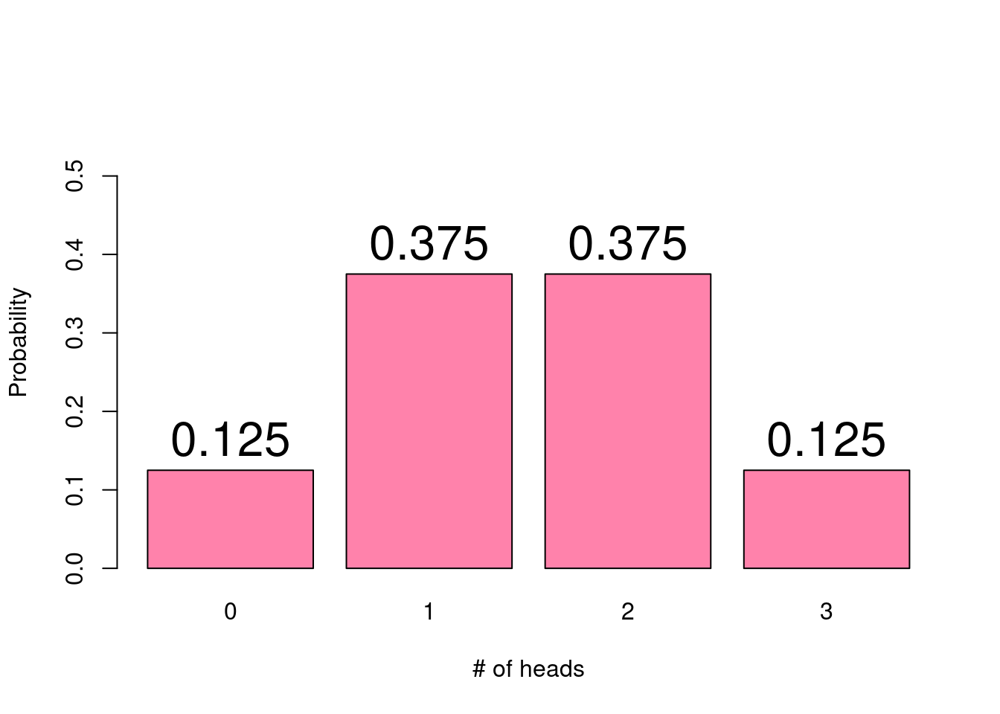
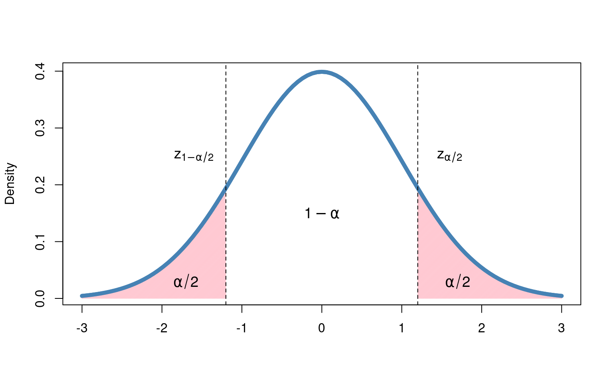

6 Probability Distributions
“Statistics is the grammar of science.”
— Karl Pearson
- Understand how a distribution represents a random process that creates data that is then observed
- Understand how the parameters of a distribution govern how the data is generated [and with what probability]
- Be able to identify which distributions underlying a given real world random process.
6.1 Introduction to Probability Distributions
In Chapter 4, we introduced the idea of random processes, i.e. situations in which the outcome can not be determined perfectly in advance. Random processes are defined in terms of the collection of possible events (sample space) and their associated probabilities. In that chapter, we saw three methods for calculating probabilities - the enumeration method, the probability function method, and the simulation method. In this chapter we will expand on the probability function method, which uses a known function called a probability distribution to determine the probability of each event.
Probability distributions are closely related to random variables, a numeric variable that can take on different values depending on the outcome of a random process. In previous mathematics courses you may have seen variables such as \(x\) or \(y\) used as placeholder values which are then solved for. For example, you can solve for the variable \(x\) in \(4x + 5 = 25\), to determine \(x = 5\). By contrast, the outcome of a random variable cannot be predetermined. Instead, we talk probabilistically about the likelihood of observing each possible outcome. Random variables are typically denoted with capital letters, e.g., \(X\) or \(Y\), whereas the observed outcome of the random process is denoted with lowercase letters \(x\) or \(y\). For example, flipping a coin three times is a random process. We can define the random variable \(X\) to represent the number of heads we observe between the three flips. \(X\) can take on four possible values: 0, 1, 2, or 3. If we observe 2 heads, we have \(x = 2\).
Most simply, a probability distribution (often just called a distribution) is a method for taking a possible event as input, and giving us the corresponding probability as output; the corresponding probability tells us how likely it is that the specific event will occur, out of all of the possible events. We often say random variables have or follow a probability distribution, as the distribution quantifies the probability of observing the possible values a random variable can take on. There are many useful probability distributions that have been defined by mathematicians and statisticians to describe a variety of scenarios:
Counting the number of successes in a fixed number of trials that can results in either success or failure
Counting the number of failures before the first success in a series of success/failure trials
Describing the length of time between events that occur at a constant rate
Describing the blood pressure of adults
One can represent a probability distribution visually using a probability histogram. On the x-axis, we have the possible outcomes of the random process - the values the random variable could take on. For each outcome, the bar height represents the probability of observing that value. For the coin flipping example, the probabilities of observing each possible number of heads can be represented as:

The beauty of using probability distributions to describe the likelihood of all outcomes of a random process is its simplicity. Probability distributions rely on a small number of parameters which determine the distribution’s ``shape".
Something about expected values.
Probability Distribution: A method for assigning probabilities to all possible events
Random Variable: A method for assigning probabilities to all possible events
Probability histogram: Values associated with a probability distribution that determine the distributions shape
Parameters: Values associated with a probability distribution that determine the distributions shape
6.2 Binomial Distribution
One common probability distribution is the binomial distribution, which describes the number of successes in a fixed number of independent trials that can result in one of two outcomes (success or failure), when each trial has the same probability of success. We have already seen one example of the binomial distribution - flipping a coin three times counting the number of flips that result in heads (success). Each flip has two possible outcomes (heads or tails), the same probability of heads (50%), and we have predetermined the number of trials (3 flips). Another example of the binomial distribution is rolling a six-sided die 10 times and counting the number of rolls that result in a 5 or 6. In this example, each die roll has a 1/3 chance of turning up a 5 or 6 and the die will be rolled 10 times.
As you may have noticed in these binomial distribution examples, the distribution can be used for various probabilities of success and numbers of trials. In fact, these quantities define the two parameters of the binomial distribution. These parameters are denoted as \(n\) = the number of trials and \(p\) = the probability of success. For any valid value of \(n\) and \(p\), we can use the binomial distribution to compute the probability of observing any possible outcome. To illustrate this, we will consider a binomial distribution with \(n = 10\) trials. The following figure shows the probability histograms for four different values of \(p\).

When \(p\) is 0.2, we are more likely to observe a lower number of successes, than to observe 8 or more successes. When \(p\) is 50%, we are most likely to observe 5 of the 10 trials resulting in a success, with the probability decreasing as the number of successes gets closer to 0 or 10. For a large success probability of 90%, there is a very small chance we observe less than 6 successes and a much higher probability of observing 9 or 10 successes.
In the previous chapter, we examined the possible events and associated probabilities with flipping a coin three times, where each side could land with equal probability. In particular, we noted the collection of possible events was given by
\[\mathcal{S} = \{HHH, HHT, HTH, THH, TTH, THT, HTT, TTT\},\] and the respective probabilities for the number of heads were
| # Heads | Probability |
|---|---|
| 0 | 1/8 |
| 1 | 3/8 |
| 2 | 3/8 |
| 3 | 1/8 |
Might we consider this table a probability distribution? Perhaps, as it does give us a method for determining a probability for any given event. However, the usefulness of such a method comes into question as our experiment changes. What if instead we had flipped our coin 50 times? Or 100? What is needed instead is a method that is more robust to changes in the experiment.
Here, we introduce the binomial distribution, a probability distribution in which:
- The total number of trials (or flips) is fixed in advance at some value, \(n\)
- There are two possible events or outcomes within each trial
- Each trial has the same probability of success (heads), which we will denote \(p\)
- Each trial is independent of all other trials. Whatever result occurs on the first flip will have no impact on the second, and so on.
Notationally, the binomial distribution is expressed as \(X \sim Bin(n,p)\), or “The random variable \(X\) follows a binomial distribution with \(n\) trials and probability of success, \(p\).” We can also express this with the following formula:
\[ P(X = x) = \binom{n}{x} p^x (1-p)^{n-x} \] where \(n\) and \(p\) are the parameters of our distribution, and \(X\) can take any of the values \(x = 0, 1, \dots, n\). Perhaps unfamiliar to us here is the leading term in the expression above, \(\binom{n}{x}\), called the binomial coefficient, which can be written as
\[ \binom{n}{x} = \frac{n!}{x!(n-x)!} \] where \(n! = n \times (n-1) \times \dots \times 2 \times 1\) (known as a factorial). By convention, we have that \(0! = 1\). In words, we might say \(\binom{n}{x}\) as “\(n\) choose \(x\)” or “given that we have \(n\) total trials, in how many ways might the outcome \(x\) appear?” While this may seem daunting at first, the need for it is quite reasonable. Consider again our coin flipping experiment, where the possible outcomes were listed as
\[ \mathcal{S} = \{HHH, HHT, HTH, THH, TTH, THT, HTT, TTT\}. \]
If we are interested in determining the probability of observing two heads, we note that there are multiple ways in which this occurs. We might ask ourselves, “If we have \(n = 3\) flips, how many ways might we choose \(x = 2\) heads?” Writing this with our binomial coefficient, we find that
\[ \binom{3}{2} = \frac{3!}{2!(3-2)!} = \frac{3 \times 2 \times 1}{2 \times 1 \cdot(1 \times 1)} = \frac62 = 3, \] and indeed, 3 is precisely the number of outcomes in \(\mathcal{S}\) in which two heads occur.
Now that we have the number of ways in which we might have two heads, we move on to determining the probability of such an event. Being a fair coin, we know that the probability of heads is \(p = 0.5\), and because these events are independent, we know that the probability \(P(HHT) = P(HTH) = P(THH)\). Consequently, we need only determine the probability for one of them and then multiply this number by 3, the number we found from the binomial coefficient. See that
\[ \begin{align*} P(HHT) &= P(H) \cdot P(H) \cdot P(T) \\ &= \underbrace{(0.5)(0.5)}_{P(H) P(H)} \cdot \underbrace{(1 - 0.5)}_{{P(T)}} \\ &= 0.125 \end{align*} \] Putting these pieces together, we arrive precisely at the binomial distribution:
\[ \begin{align*} P(X = 2) &= \binom{3}{2} (0.5)^2 (1-0.5)^{3-2} \\ &= 3 \times 0.125 \\ &= 0.375 \end{align*} \] which we note is precisely the value we computed [(in the table above)/(in chapter 4)]
Finally, we consider how we might use the probability distribution for the binomial to answer questions like, “If we have \(n = 3\) coin flips, what is the probability that we get at least 2 heads?” We can express this as \(P(X \leq 2)\), and the solution becomes immediate once we recognize that
\[ \begin{align*} P(X \leq 2) &= P(X = 0) + P(X = 1) + P(X=2) \\ &= 0.125 + 0.375+0.375\\ &= 0.875. \end{align*} \] In general, the solution to the binomial probability \(P(X \leq x)\) for \(n\) events can be written
\[ P(X \leq x) = \sum_{k=0}^x \binom{n}{k} p^k (1-p)^{n-k}. \]
- Using the binomial probability distribution above, verify the correct values for \(X = 0,1,2,3\) in table [number]
-
Assume that we have a bag of red and blue marbles, with 75% of them being blue and 25% being red. Each time we draw a marble, we will place it back in the bag before drawing again (this is known as sampling with replacement)
- If we draw 10 marbles from the bag, what is the probability that at least 4 of them will be blue?
- If we draw 6 marbles from the bag, what is the probability that we will draw an odd number of red marbles?
- What does the binomial distribution function look like assuming that \(n = 10\), when drawing a blue marble is considered a “success?”
6.2.1 Plotting the PMF (delete?)
It is often useful to create a visual representation of a pmf as well. Doing so quickly gives us an idea of where data tend to aggregate and how the data are dispersed. Below are two plots representing two different sets of parameters for the binomials distribution. What do you notice in how they differ? How are they similar? What impacts do the different parameters have on the distribution of the data?

Of particular note here, we recall from the previous chapter that the sum of all possible probabilities must be equal to one. Visually, this is represented by the total area of the bars in our plot. Given that our bars our rectangles, we can find the area by considering that the width of each bar is equal to 1, and it’s height is given by the probability of \(X = x\), which can be found using the PMF. On the left hand side, for example, from left to right, we have
\[ \begin{align} \text{Total Area } &= \text{ \{Area of Heads = 0\} + \{Area of Heads = 1\} + } \\ & \quad \ \ \text{\{Area of Heads = 2\} + \{Area of Heads = 3\}} \\ &= (1 \times P(X = 0)) + (1 \times P(X = 1)) + (1 \times P(X = 2)) + (1 \times P(X = 3)) \\ &= 0.125+0.375+0.375+0.125 \\ &= 1 \end{align} \] If, say, we are interested in the probability that \(X = 2\) or \(X = 3\), we can add the area of the two corresponding bars. In this case, we find \(P(X = 2, 3) = 0.75\).
[Include binomial app here. See that clicking bars adds to something. Explain changing settings, clicking bars, selecting different things. Come up with exercises below, i.e., prob that even if n = 8, prob if even n = 4, etc.]
6.3 Normal Distribution
Included below are histograms of the depth of Lake Huron from 1875-1972, the annual flow of the Nile river in cubic meters from 1871-1970, and the height in feet of 31 black cherry trees. What do these histograms seem to have in common?

What we see here are examples of a normal distribution (also known as a bell curve), one of the most ubiquitous distributions in all of statistics. The normal distribution is characterized by the “bell shape” that is symmetric about it’s mean [but maybe don’t say mean].
Like the binomial, the normal distribution is characterized by two parameters, \(\mu\) and \(\sigma^2\), representing the mean and the variance, respectively. The mean value, \(\mu\), indicates the location of the peak on the x-axis, whereas the variance, \(\sigma^2\), indicates the amount of dispersion about the mean. A random variable \(X\) that follows a normal distribution can be expressed \(X \sim N(\mu, \sigma^2)\), or, “The random variable \(X\) follows a normal distribution with mean \(\mu\) and variance \(\sigma^2\).” The formula for the normal distribution is given as
\[ \begin{align*} f(x) = \frac{1}{\sqrt{2 \pi \sigma^2}} \ e^{- \frac{(x-\mu)^2}{2\sigma^2}}. \end{align*} \]
Consider the two normal distributions below, with different values for \(\mu\) and \(\sigma^2\). Although they are centered at different locations and have different amounts of dispersion around the mean, they are both bell-shaped curves characteristic of the normal distribution:

Given that the normal distribution appears so frequently in statistics, it is common practice to standardize a normal distribution so that it has a mean value of \(\mu = 0\) and variance \(\sigma^2 = 1\). A normal random variable that has been standardized is called a standard normal distribution and is often written \(Z \sim N(0,1)\). We can consider again the histograms above, once they’ve been standardized:

Unlike the binomial distribution, in which there are \(n\) possible values that our random variable can take, the normal distribution represents a random variable that is continuous over a range of values. Instead of asking the probability of a specific value, say, \(Z = 0\), probabilities are given as the area under the curve for a certain interval. We might ask, “What is the probability that \(Z\) is one standard deviation (\(\sigma\)) away from 0?” pr perhaps, “What is the probability that \(Z < 0\)?”

Because probabilities for continuous distributions are described as areas under the curve, their values are computed with integrals. [do we introduce probability tables or just go with the app?]
also maybe include
- subtract cdf?
- probability that |Z| > z?
- what else?
[Using app below, explore different parameter values. Use slider to select a range of probabilities. Note that the area of interest is highlighted. Do exercises with it]
Binomial Distribution: A discrete distribution in which there are two possible outcomes, “events” and “non-events.” There parameters are \(n\), which dictate the number of trials, and \(p\), determining the probability of an event
Normal Distribution: A continuous distribution with two parameters that is symmetric about a mean value, \(\mu\), with a variance \(\sigma^2\). Many real world processes follow a normal distribution.
Standard Normal Distribution: A special case of the normal distribution, \(Z \sim N(0, 1)\)
Probability Mass Function: A probability function used for discrete random variables. The probability of outcomes is given as a sum
Probability Distribution Function: A probability function used for continuous random variables. The probabilities of outcomes are taken over a range, given as an integral.
6.4 Other Common Distributions
Having examined in detail both discrete and properties distributions, demonstrated with the binomial and normal distributions, respectively, we consider below a brief overview of other common distributions and their properites.
6.4.1 Poisson Distribution
The Poisson distribution, like the binomial, is a discrete distribution, in that it concerns itself with count data. Specifically, a Poisson distribution describes the number of independent events that may occur within a fixed interval of time. For example, we may be interested in the number of cars that pass through a busy intersection from noon to 1pm every day, or the number of major floods that occur in an area every 100 years. Perhaps the most famous example of the Poisson distribution comes courtesy of Ladislaus Bortkiewicz, a Russian statistician who, in 1898, showed that the number of Prussian soldiers killed by being kicked by a horse in a twenty year period followed a Poisson distribution (also child suicides, but that’s less fun).
The Poisson distribution has a single parameter, \(\lambda\), which describes the rate at which events occur, and a random variable following a Poisson distribution may be expressed as \(X \sim Pois(\lambda)\) (People who write \(X \sim Po(\lambda)\) are heathens). A random variable following a Poisson distribution has the following assumptions:
- The value of \(X\), being a count, can be any non-negative integer, i.e., \(0, 1, 2, \dots\) with no upper bound
- The occurrence of one event in a time interval is independent of another event. One soldier being kicked by a horse has no impact on the probability of another solider being kicked by a horse.
- \(\lambda\), which may be any number greater than \(0\), describes the rate at which events occur
- [Two events cannot occur at the exact same time, though they probably don’t need this]
The distribution function of a Poisson random variable with rate \(\lambda\) can be expressed
\[ P(X = x) = \frac{\lambda^x e^{-\lambda}}{x!} \] One surprisingly detail about the Poisson distribution is the relationship between the mean and the variance. For both, we have that \(E(X) = Var(X) = \lambda\).
6.4.1.1 Plots for Poisson
As we look at the plot for the Poisson, we will notice one aspect in particular that distinguishes it from the plots of both the binomial and normal distributions: it is no longer symmetric. This is a consequence of the range of values that a Poisson random variable can take on. Whereas a binomial random variable was bounded between \(0\) and \(n\), the number of trials conducted, and where the normal distribution allowed any real number, the Poisson is bounded below by \(0\), while having no theoretical upper bound. Given below is a plot of the distribution with \(\lambda = 2\) and \(\lambda = 4\) (it’s obvious here that choosing a specific value is inadequate. We can replace these plots with distribution exploration apps)

Just as with the binomial distribution, we can determine the probability of an event or collection of events by determining the area of the bars in our plot. Below is an interactive app to do stuff. Exercises